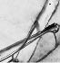

NOTLAR

ÖNSÖZ
- Her yıl tahmini dört yetişkinden biri- Ulusal Akıl Sağlığı Enstitüleri web sitesi: http://www.nimh.nih.gov/health/publications/the-numbers-count-mental-disorders-in-america/index.shtml.
1. BÖLÜM: SEKSİ BAKIŞ
- YAVIS young (genç), attractive (çekici), verbal (konuşkan), insightful (içgörülü, bilgili) ve wealthy (varlıklı) sözcüklerinin baş harflerinden meydana gelir. Kimm HJ, Bolz W, Meyer AE. Hamburg Kısa psikoterapi karşılaştırmalı deneyi. Hasta örneklemesi: Açık ve kapalı seçim faktörleri ve prognostik tahminler. Psychotherapy and Psychosomatic 1981; 35:96-109.
- Freud terapistin hasta açısından “nüfuz edilemez” nitelikte olması gerektiğini düşünürdü- Gelso CJ, Hayes JA. Countertransference and the Therapist’s Experience: Perils and Possibilities. Lawrance Ehrlbaum and Associates, Mahwah, NJ, 2007, s. 62.
- Aktarım, içgörü yönelimli psikoterapinin en önemli yönlerinden biridir, dedi- Goldberg ST. Using the Transference in Psychotherapy. Jason Aronson Publishers, Dr. Lanham, 2006; Bloch, S (ed). An Introduction to the Psychotherapies. Oxford University Press, New York, NY, 2006.
- 36 Sınırda hastalar, psikolojik durumları- Friedel RO, Hoffman PD, Penney D, Woodard P Borderline Personality Disorder Demystified: An Essential Guide for Understanding and Livin with BPD. Da Capo Press, New York, NY, 2004.
- EEG’sinde “şakak lobu epilepsisine” dair herhangi bir bulgu yoktu- Geschwind N. Temporal lob epilepsisinde kişilik değişimleri. Epilepsy & Behaviour 2009; 15:425-33.
2. BÖLÜM: KAFA ÜSTÜ DURAN ÇIPLAK KIZ
- Talihsiz ama geleneksel bir geçiş töreni- Small GW. Stajyer doktor stres sendromu. Psychosomatics 1981; 22:860-9.
- Kendime bir kısaltma oluşturmuştum- Cassem NH, Murray GB, Lafayette JM, Stern TA. Hezeyanlı hastalar, The MGH Handbook of General Hospital Psychiatry, 5. Baskı. Editçr Stern TA, Fricchione GL, Cassem NH, Jellinek MS, Rosenbaum JF. Mosby, St. Louis, MO, 2004, s. 119-34.
- Kendisine gereğinden fazla insülin enjekte ederse- Fishbain DA, Rotundo D. Psikiyatri acil servisinde hipoglisemik hezeyan sıklığı. Psychosomatics 1988; 29:346-8.
- Günümüzde nöbet saatleri sınırlandırıldı- Meltzer DO, Arora, VM. İhtisas görev saatlerinin değerlendirilmesi: Yapılacak daha çok iş. Journal of the American Medical Association 2007; 298: 1055-7.
3. BÖLÜM: ELİMİ TUT LÜTFEN
- Verdiği “Öztanı” başlıklı seminerde- Stern TA, Prager LM, Cremens MC. Tıp stajyerleri için öztanı turları. Psychosomatics 1993; 34:1-7.
- “Mesafeli bir ilgiyi” korumak yararlı olacaktır- Halpern J. From Detached Concern to Emphaty: Humanizing Medical Practice. Oxford University Press, New York, NY, 2001.
- Apotemnofili- Money J, Jobaris R, Furth G. Apotemnophilia: Two cases of self-demand amputation as sexual referance. The Journal of Sex research 1977; 13:115-24.
- Dismorfofobi ilk kez İtalyan psikiyatr tarafından tanımlandı-Gilman SL. Creating Beauty to Cure the Soul. Race and Psychology in the Shaping of Aesthetic Surgery. Duke Universite Press, Durham, NC, 1998.
- BIID’i olanlar- Frare F, Perugi G, Ruffolo G, Toni C. Obsessive Compulsive Disorder and body dismorphic disorder: A comparison of clinical faetures. European Psychiatry 2004; 19:202-8. Müller S. Body integrity identity disorder (BIID). Is the amputation of healthy limbs ethically justified? American Journal of Bioethics 2009; 9:36-43; bayne T, Levy N, Amputees by choice: Body integrity disorder and the ethics of amputaiton: Journal of Applied Philosophy 2005; 22:75-86.
- Anafranil- Gitlin MJ. Psychotherapist’s Guide to Psychopharmacology. Free Press, New York, NY, 1990.
4. BÖLÜM: BAYILAN KIZ ÖĞRENCİLER
- Çok az rastlansa da bu salgınların- Small GW, Nicholi AM. Mass hysteria among schoolchildren: Early loss as a predisposing factor. Archives of General Psychiatry 1982; 39:721-4.
- “Altıncı sınıflar”- Ibid.
- Tarif ettiği şey kitle histerisinin tipik özelliklerini- Small GW, Borus JF. Outreak of illness in a school chorus: Toxic poisoning or mass hysteria? New England Journal of Medicine 1983; 308:632-5.
- Bu tuhaf salgınların birkaçını daha inceledim- Small GW, Borus JF. The influence of newspaper reports on outrbeaks of mass hysteria. Psychiatric Quarterly 1987;58:269-78; Small GW, Propper MW, Randolph E, Eth S. Mass hysteria among student performers: Social relationship as a symptom predictor. American Journal of Psychiatry 1991;148:1200-5: Small GW, Feinberg DT, Steinberg D, Collins MT. A sudden illness outbreak suggesting mass hysteria in schoolchildren. Archive sof Family Medicine 19944;3:711-6.
- Tuhaf açıklamalar- Johnson DM. The “phantom anesthetist” of Matttoon: A field study of mass hysteria. Journal of Abnormal and Social Psychology 1945;40:175-86; Medalia NZ, Larsen ON. Diffusion and disblief in a collective delusion: The Seattle Windshield Pitting Epidemic. American Sociological Assosication 1958; 180.
- Araştırdığım Boston banliyö ilkokulu salgınında- Small GW, Nicholi AM. Mass hysteria among school children: Early loss as a predisposing factor.Archives of General Psychiatry 1982;39:721-4.
- On yıl…inceledim-Small GW, Propper MW, Randolph E, Eth S. Mass hysteria among stuent performers: Social relationship as a symptom predictor. American Journal of Psychiatry 1991;148:1200-5.
- Hemen hemen iki yıl sonra- Small GW, Borus JF. Outreak of illness in a school chorus: Toxic poisoning or mass hysteria? New England Journal of Medicine 1983; 308:632-5.
- Çalışmayı anlattığım New England Journal of Medicine’deki makalede-Ibid.
5. BÖLÜM: BEBEK AŞKI
- Yalancı ya da histerik gebelik diye de bilinen psödosiyezi- Small GW. Pseudocyesis: An Overview. Canadian Journal of Psychiatry 1986;31:453-7; Sobrino LG. Prolactin, psychological stres and environment in humans: adaptation and maladaptation. Pituitary 2003;6:35-9.
- Okumaya devam ettim- Small GW. Pseudocyesis: An Overview. Canadian Journal of Psychiatry 1986;31:453-7.
6. BÖLÜM: SESSİZLİĞİN TEDAVİSİ
- Yaşlılarla çalışmaya gönüllü genç psikiyatrların sayısı pek fazla değildi-Jarvik LF, Small GW (ed). Psychiatric Clinics of North America, Yaşlanma konulu sayı, 5. Cilt, sayı 1, 1982; Small GW, Fong K, Beck JC. Training in geriatric psychiatri: Will the supply meet the demand? American Journal of Psychiatry American Journal of Psychiatry 1988;145:476-8.
- İskoç psikiyatrist R. D. Lang- Boyers R. R.D. Laing and Anti-psychiatry. Hippocrene Books, New York, NY, 1974.
- Stanford’lu psikolog David Rosenhan- Rosenhan DL. ON being sane in insane places. Science 1973;179:250-8.
- Psikanaliz pek çok insana…yardımcı olmuştur- Gabbard GO, Gunderson JG, Fonagy P. The place of psychoanalytic treatments within psychiatry. Archives of General Psychiatry 2002;59:505-10; Leichsenring F, Rabung S. Effectiveness of long-term psychodynamic psychotherapy: A meta-analysis. Journal of the American Medical Association 2008;300:1551-65.
- Bu hastalık nüfusun yaklaşık yüzde 1’ini etkiler-Jamison KR. An Unquiet Mind: A Memoir of Moods and Madness. Vintage Books, New York, NY, 1997.
- Alan Gelenberg’in klasik-Gelenberg AJ. The catatonic syndrome. Lancet 1976;1:1339-41.
- Diğer makalelerse … güvenliğini…açıklıyor-Shrese A, Welch CA, Park LT, ve ark. Encephalitis and catatonia treated with ECT. Cognitive and Behavioral Neurology 2008;21:46-51; Fink M, Taylor, MA. Catatonia: A Clinician’s Gudie to Diagnosis and treatment. Cambridge University Press, New Yor, NY, 2003.
7. BÖLÜM: KÜÇÜLEN PENİS
- Freud seksi birincil sosyal aktivitemiz olarak görürdü- Freud S, Brill AA. The Basic Writings of Sigmund Freud. Basic Books, New York, NY, 1995.
- Psikoz…şeklinde tanımlanır-International Early Psychosis Association Writing Group. International clinical practice gudielines for early psychosis. British Journal of Psychiatry 2005; 187:s120-4.
- Tıp ortamında kara mizah- Small GW. Stajyer doktor stres sendromu. Psychosomatics 1981;22:860-9.
- Hem duygudurum hem de psikotik semptomları olan çoğu hasta-Mahli GS, Green M, Fagiolini A, Peselow ED, Kumari V. Schizoaffective disorder: Diagnostic issues and future recommendations. Bipolar Disorders Bipolar Disorders 2008;10:215-30.
8. BÖLÜM: Delicesine endişeli
- İçgörü yönelimli terapilerin …en önemli bölümünü-Goldberg ST. Using the Transference in Psychotherapy. Jason Aronson Publishers, Lanham, MD, 2006.
- Stres ve beslenme şekli…etki edebiliyor. Ancak…-Marshall BJ, Warren JR. Unidentified curved bacilli in the stomach of patients with gastritis and peptic ulceration. Lancet 1984;1(8390):1311-5.
- Medical studentitis-Kellner R, Wiggins RG, Pathak D. Hypochondriacal fears and bliefs in medical and law students. Archives of General Psychiatry 19856;43:487-9;Moss-Morris R, Petrie KJ. Redefining medical stuendts’ disease to reduce morbidity. Medical Education 2001;35:274-8.
- Minuchin sık sık…çekirdek ailelerle…çalışırdı-Minuchin S. Families and Family Therapy. Harvard University Press, Cambridge, MA, 1974.
- Dolaylı Munchausen vakaları-Meadow E. Munchausen syndrome by Proxy. Archives of Disease in Childhood 1982;57:92-8.
9. BÖLÜM: GÖZLERİ TAMAMEN KAPALI
- Klasik histerik dönüşüm semptomlarında-Murphy GE. The clinical management hysteria. Journal of the American Medical Association 1982;247:2559-64.
10. BÖLÜM: BEYİN SİSİ
- Yapılan çalışmalar genlerin- Small GW. What we need to know about age related memory loss. British Medical Journal 2002;324:1502-5.
- Grubumuz PET taraması teknolojisiyle çok sayıda araştırma yürüttü-Small GW, Kepe V, Ercoli LM, ve ark. PET of brain amyloid and tau in mild cognitive impairment. New England Journal of Medicine 2006;355:2652-63.
- İlk defa 1964’te bir psikiyatri dergisi…tanımladı-Weintraub W. “The VIP syndrome”: A clinical study in hospital psychiatry. Journal of Nervous and Mental Disorders 1964;138:181-93; Parker-Pope T. When the patient is a V.I.P. The New York Times, Ağustos 27, 2009.
- Birincil tanısal teorim-Hiramatsu R, Takeshita A, Taguchi M, Takeuchi Y. Symptomatic hyponatremia after voluntary excessive water ingestion in a patient without psychiatric problems. Endocrine Journal 2007;54:643-5; Farrel DJ, Bower L. Fatal water intoxication. Journal of Clinical Pathology 2003;56:803-4.
- Psikojenik polidipsi-Rae J. Self-induced water intoxication in a schizophrenic patient. Canadian Medical Assocication Journal 1976;114:438-9.
11. BÖLÜM: RÜYALARDAKİ DÜĞÜN
- Doktorlar grup olarak…yasadışı ilaçları kullanmaya daha az…yatkındırlar-Hughes PH, Brandenburg N, Baldwin D Jr. Ve ark. Prevelance of substance use among U.S. physicians. Journal of the American Medical Association 1992;267:2333-9.
- Freud Rüyaların Yorumu adlı kitabında- Freud S, Brill AA. The Basic Writings of Sigmund Freud. Basic Books, New York, NY, 1995.
12. BÖLÜM: IŞIKLAR SÖNERKEN
- Bilişsel Davranışçı terapi-March JS. Cognitive behavioral therapy, Sadock BJ, Sadock VA (ed). Comprehensive Textbook of Psychiatry, 8. Baskı. Williams & Wilkins, Baltimore, MD, 2005, s.2806-13.
- Freud bu terimi- Gelso CJ, Hayes JA. Countertransference and the Therapist’s Inner Experience: perils and Possibilities. Lawrence Ehrlbaum and Associcates, Mahwah, NJ, 2007.
- Sosyopatlar ya da psikiyatristlerin deyişiyle “antisosyal kişilikler”-American Psychiatric Association. Diagnostic and Statistical Manual of Mental Disorders. American Psychiatric Association, Washington, DC, 1994, s.645-50.
13. BÖLÜM: BİTİMSİZ ALIŞVERİŞ
- Bu öforik (mest edici) duygular beyindeki kimyasal değişimlerle yakından bağlantılıdır-Kalivas PW, Volkov ND. The neural basis of addiction: A pathology of motivation and choice. American Journal of Psychiatri 2005;162:1403-13.
14. BÖLÜM: AİLE BAĞLARI
- Kronik amfetamin veya kokain kullanımı paranoyanın iyi bilinen nedenlerinden biridir- Cherland E, Fitzpatrick R. Psychotic side effects of psychostimulants: A 5-year review. Canadian Journal of Psychiatry 1999;44:811-3.
- Tipik bir agorafobili spontan panik atak vakası-Bienvenu OJ, Onyike CU, Stein MB. Agorophobia in adults: Incidence and longitudinal relationship with panic. British Journal of Psychiatry British Journal of Psychiatry 2006;188:432-8.
- Akıl Hastalığı İçin Ulusal Birlik-http://www.nami.org/.
- İlk psikiyatrik genetik çalışmalardan biri…Amiş ailelerle yapılan bir araştırmaydı-Egeland JA, Shaw JA, Endicott J, ve ark. Prospective study of prodromal features for bipolarity in weel Amish children. Journal of the American Academy of Childe & Adolescent Psychiatry 2003;42:786-96.
- Anksiyetenin çeşitli türleri arasında…panik bozukluk-Smoller JW, Gardnner-Schuster E, Covino J. The genetic basis of panic and phobic anxiety disorders. American Journal of Medical Genetics 2008 15;14C:118-26.
15. BÖLÜM: Sahtekâr psikiyatrist
- 312 Antidepresana ihtiyacı olup olmadığına karar vermek için-Bender S, Messner E. Becoming a Therapist: What Do I Say and Why? The Guilford Press, New York, NY, 2003.
- 312 SIG E CAPS- SIG E CAPS Dr. Carey Gross tarafından Massachussetts Geeeral Hospital’da majör depresif bozukluk kriteri için mnemonik olarak geliştirildi.
- 318 Yapılan birkaç çalışma…ortaya koydu- Alexopoulos GS, Meyers BS, Young RC, Mattis S, Kakuma T. The course of geriatric depression with “reversable”: A controlled study. American Journal of Psychiatry 1993;150:1693-9; Devanand DP, Sano M, Tang MX, Taylor S, Gurland BJ, Wilder D, Stern Y, Mayeux R. Depressed mood and the incidence of Alzheimer’s disease in the elderly living in the community. Archives of General Psychiatry 1996;53:175-82.
- 320 Larry yeni kimyasal işaretleyiciden söz ediyordu- Small GW, Kepe V, Erocoli LM, ve ark. PET of brain amyloid and tau in mild cognitive impairment, New England Journal of Medicine 2006;355:2652-63.
- 322 Anti-Alzheimer ilacı- Alzheimer’s Disease Medications Fact Sheet: http://www.nia.nih.gov/Alzheimers/Publications/medicationsfs.htm.
SONSÖZ
- Vakaları asansörde…umursamadan tartışan doktorlara- Small GW. That boorsih, insensitive, loudmouthed,crass physician in the elevator. Journal of the American Medical Assocication 1985;253:2645.
- Pek çok kişi teknik beceriyi-Dibblet S, Schaidhammer M, Fleischer C, Greitemann B. Patient-doctor interaction in rehailitation: The relationship between percieved interaction quality and long-term treatment results. Patient Education and Counceling 2009;76:328-35. Kim SS, Kaplowitz S, Johnston MV. The effects of physician emphaty on patient satisfaction and compliance. Evaluation & the Health Professions 2004;27:237-51.